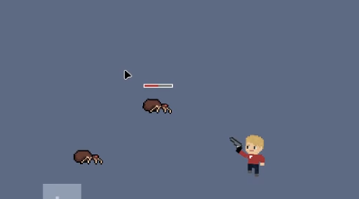
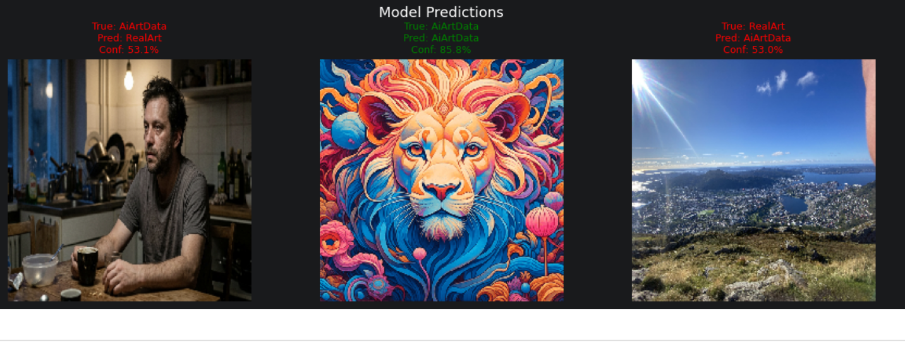
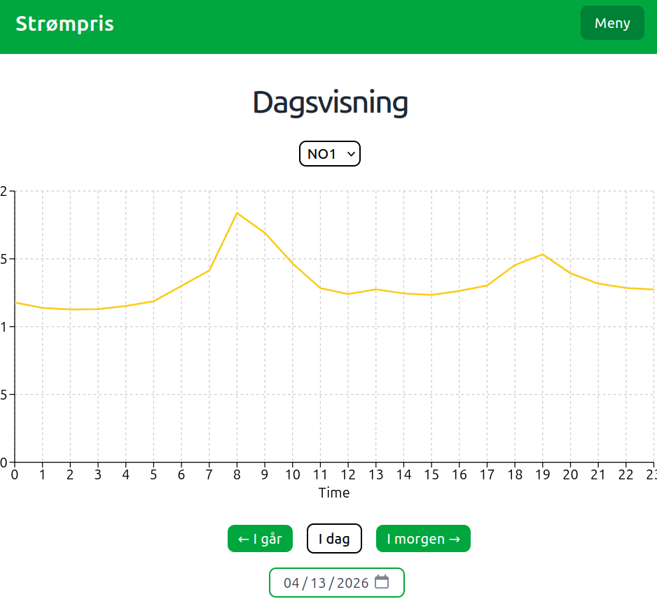
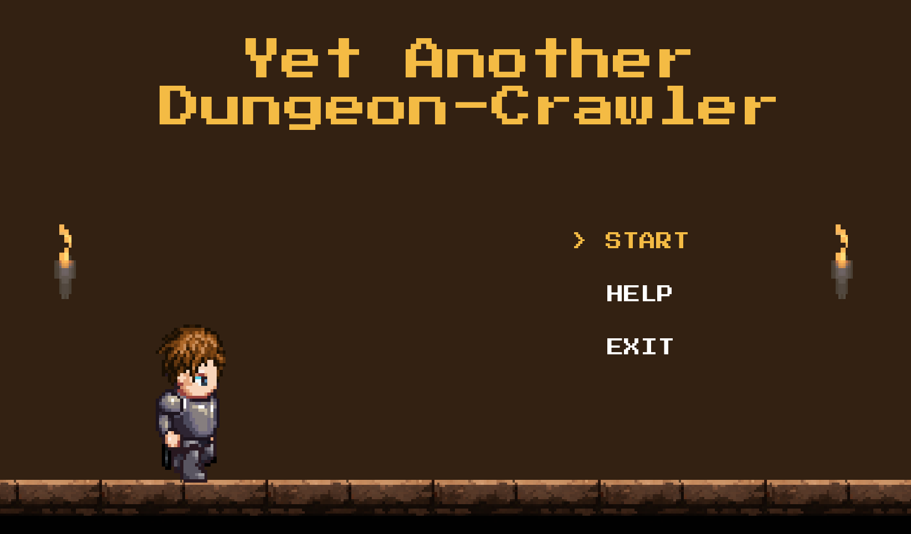
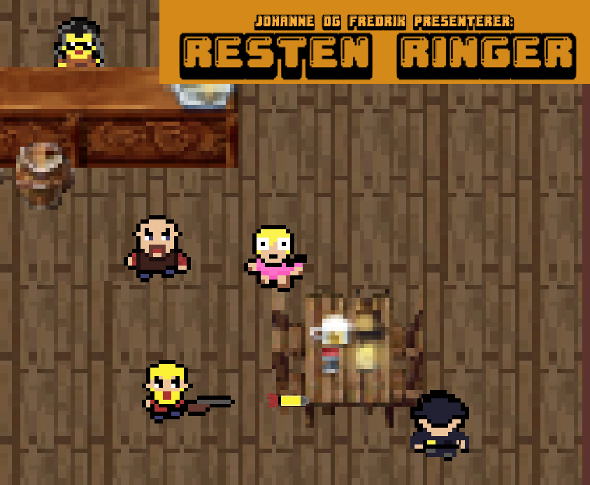

Webapp som hjelper studenter å kartlegge hva de kan og ikke kan innen et emne. Adaptive tester
generert av Claude, visuell kunnskapsgraf med avhengigheter mellom temaer, spaced repetition og
fritekstsvar vurdert av LLM. Bygget med agentic development via Claude Code. Deployet med Docker,
Supabase og Render.
React
FastAPI
PostgreSQL
Docker
Tailwind
Claude Code
React Flow

Oppfølgeren til et spill en venninne og jeg lagde sammen, nå skrevet i Python med Pygame og inspirert av
Enter the Gungeon og The Binding of Isaac. Jeg eksperimenterer med fiender som oppfører seg smart: fire ulike
atferder, pathfinding med A* og linjesjekk med Bresenhams algoritme for å finne en skytebane.
Python
Pygame
A*
Tilstandsmaskiner

Gruppeeksamen i INFO284 Maskinlæring. Fire modeller for sentimentanalyse av WhatsApp-anmeldelser
(Logistic Regression, SVM, LightGBM, BiLSTM) og en CNN-basert klassifiserer som skiller
AI-generert kunst fra ekte kunst via transfer learning med EfficientNetB0.
Python
scikit-learn
TensorFlow
LightGBM
NLTK
Transfer Learning

Fullstack-applikasjon som visualiserer norske strømpriser i sanntid. Inkluderer interaktive grafer,
en kostnadskalkulator og en AI-drevet opplysningsside. Deployet med Docker, Supabase og Render.
React
FastAPI
PostgreSQL
Docker
Tailwind
Claude AI

Gruppeprosjekt på studiet: et dungeon-crawler-spill hvor man kjemper seg gjennom rom full av fiender og
powerups. Jeg var prosjektleder i et team på fem.
Java
LibGDX
Maven
Teamarbeid

Et ferdig utviklet spill i Java med fokus på objektorientert design og spill-logikk.
Java
OOP
Spill-logikk
Struktur
Neste på lista
I planleggingsfasen...
Yamabiko: en selvhostet treningsapp for å følge og sammenligne turene mine, forket fra
Endurain. Jeg har så
vidt begynt, så foreløpig er det bare planlegging.
Se repoet.